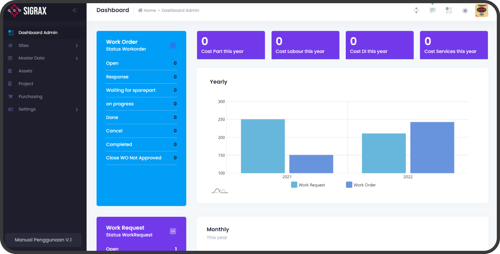
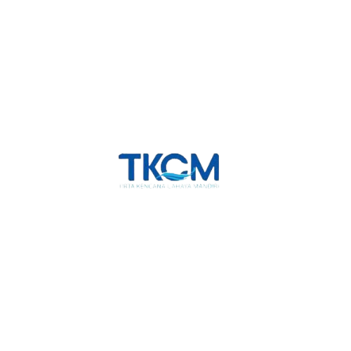
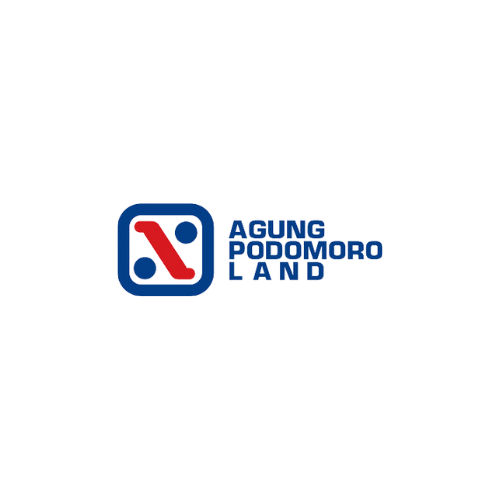
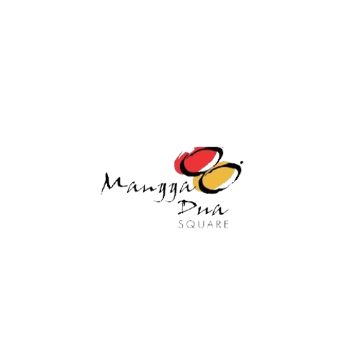
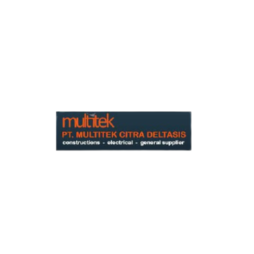
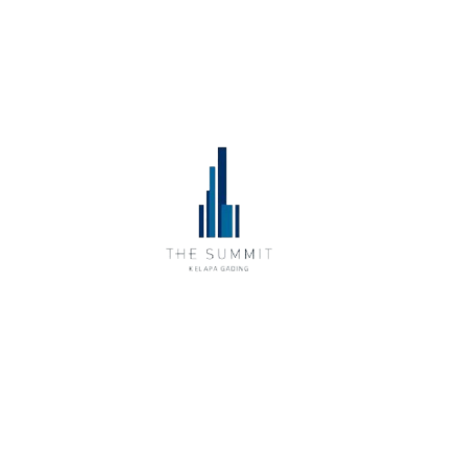
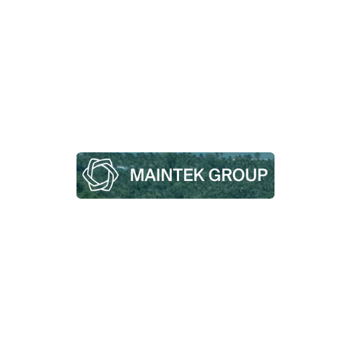
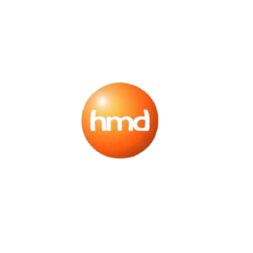
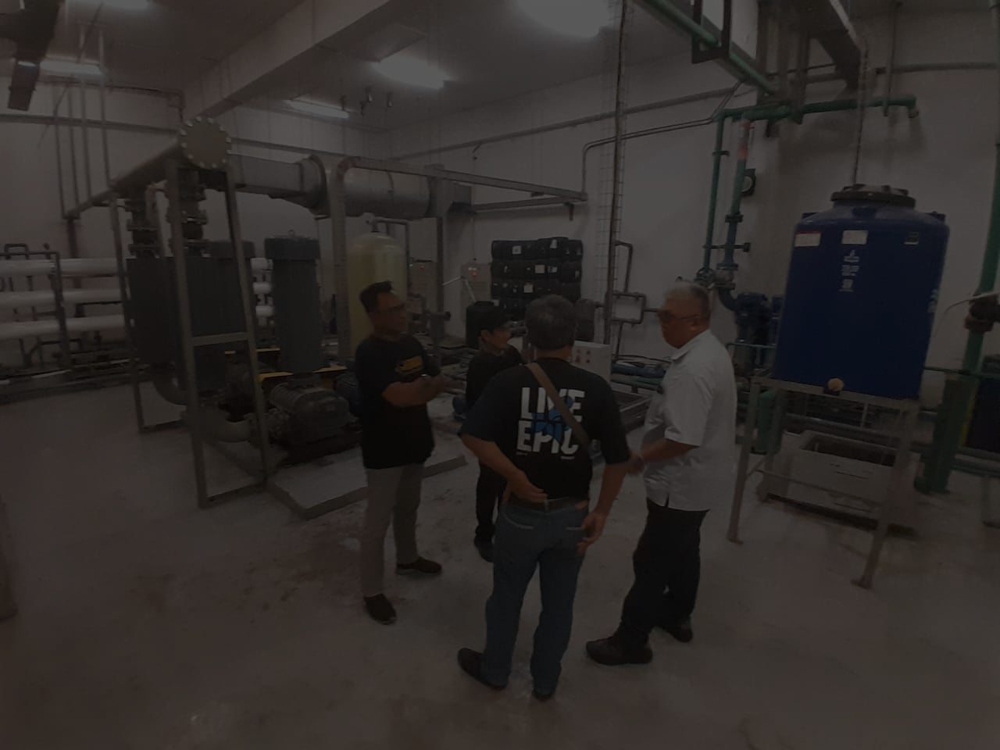
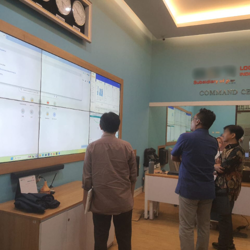

Kelola maintenance pabrik Anda dalam satu sistem
Sigrax membantu tim maintenance mengelola aset, work order, preventive schedule, dan inventaris suku cadang — tanpa biaya lisensi tahunan.
-45%
Downtime Mesin
100%
PM Terjadwal
Rp 0
Lisensi Tahunan
24/7
Support Lokal

Satu platform untuk seluruh siklus maintenance
Dari database mesin sampai laporan audit, semua terintegrasi.
Executive Dashboard
Pantau MTTR, MTBF, biaya maintenance, dan status work order real-time.
Master Data
Database terpusat untuk mesin, lokasi pabrik, vendor, dan karyawan.
Manajemen Aset
Lacak kondisi mesin, riwayat servis, garansi, dan depresiasi aset.
Work Order
Alur digital dari request operator sampai eksekusi teknisi dan close-out.
Preventive Maintenance
Jadwal servis otomatis berdasarkan waktu atau running hours mesin.
Inventaris & Suku Cadang
Kontrol stok gudang, safety stock, dan material request terintegrasi.
Dipercaya oleh perusahaan di berbagai sektor industri







Dibangun untuk kebutuhan industri Indonesia
100% bisa disesuaikan
Setiap pabrik punya SOP berbeda. Sigrax dibangun modular — bisa dikonfigurasi mengikuti hierarki mesin, checklist, dan alur approval spesifik pabrik Anda.
Tanpa biaya lisensi tahunan
Skema kepemilikan transparan. Tidak ada recurring subscription yang membebani anggaran maintenance jangka panjang.
Tim support lokal
Dukungan teknis langsung oleh engineer di Indonesia yang memahami bahasa dan tantangan operasional harian tim Anda.
Standar internasional
Mengadopsi ISO 55000, Total Productive Maintenance (TPM), dan Reliability-Centered Maintenance (RCM).
Bahasa Indonesia
Antarmuka berbahasa Indonesia yang jelas, mudah dipelajari dari level teknisi sampai manajemen.
Performa cepat
Arsitektur sistem yang dioptimalkan untuk memproses jutaan data log aset tanpa lag.
Lihat tampilan sistem
Klik tab untuk melihat screenshot modul Sigrax.
Executive Dashboard
Pantau seluruh performa maintenance pabrik — status tiket, durasi perbaikan, dan realisasi anggaran secara real-time.
- Rekapitulasi biaya suku cadang dan tenaga kerja otomatis
- Monitoring KPI: MTTR dan MTBF
- Notifikasi status mesin breakdown
.png)
Master Data
Fondasi data terpusat — aset pabrik, hierarki lokasi, data teknisi, vendor, dan satuan ukuran yang terstruktur.
- Standarisasi penamaan dan kodefikasi aset
- Spesifikasi teknis dan manual book digital
- Hak akses berbasis role (RBAC)

Manajemen Aset & Suku Cadang
Lacak kondisi mesin, riwayat pergantian part, tanggal pembelian, dan garansi. Pantau stok minimum spare part kritis.
- Riwayat servis per nomor seri mesin
- Pelacakan perpindahan mesin antar lini
- Perhitungan depresiasi nilai aset

Work Request & Work Order
Operator ajukan request, supervisor approve, teknisi terima work order digital lengkap dengan checklist perbaikan.
- Distribusi tugas berdasarkan keahlian
- Integrasi pemakaian suku cadang gudang
- Log durasi kerja dan verifikasi selesai

Preventive Maintenance
Jadwalkan perawatan berkala sebelum mesin rusak. Otomatis reminder berdasarkan waktu atau jam operasional mesin.
- Auto-generate work order saat jadwal tiba
- Standarisasi checklist inspeksi
- Kurangi risiko breakdown sampai 65%

Tim lokal yang memahami pabrik Anda
Kami adalah tim engineer dengan pengalaman di bidang manajemen aset dan pemeliharaan industri. Sigrax lahir dari kebutuhan nyata pabrik di Indonesia — bukan template software luar negeri yang dipaksakan.
Setiap implementasi didampingi langsung oleh konsultan yang memahami operasional harian pabrik, dari lantai produksi sampai ruang manajemen.